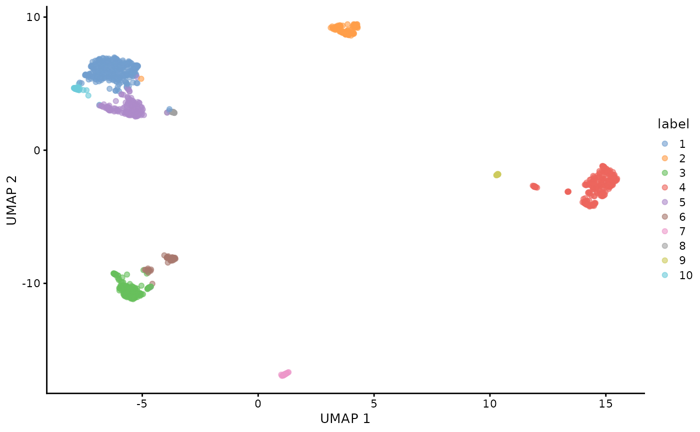
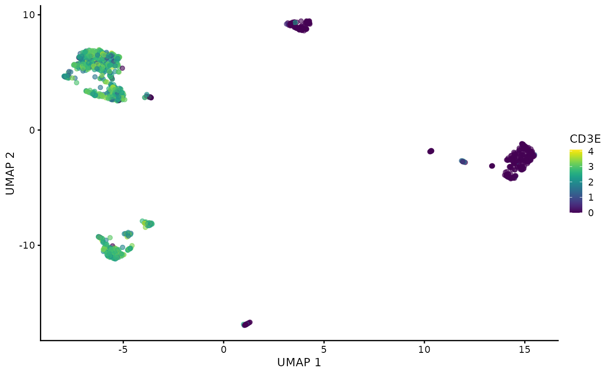
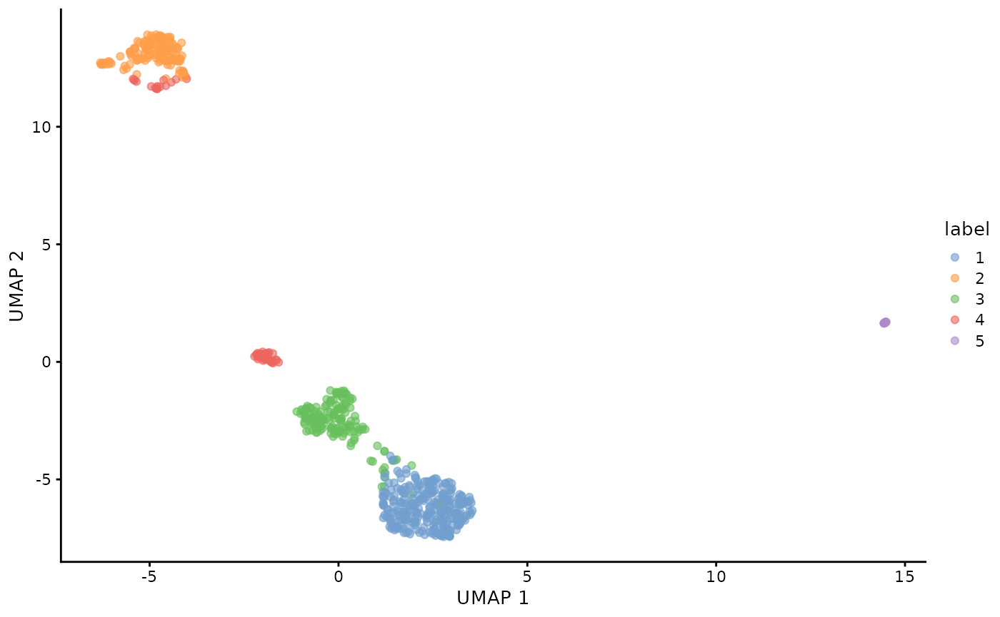

Creating MAMS from SingleCellExperiment
2024-05-30
sce_rmams_tutorial.RmdIntroduction
Matrix and Analysis Metadata Standards (MAMS) can be used to capture the relevant information about the data matrices and annotations that are produced during common and complex analysis workflows for single-cell data.
This workflow highlights how an RNA expression based experiment from a SingleCellExperiment object can be annotated using the rmams package. For this purpose, we will analyze the PBMC 1K dataset using packages from Bioconductor and with SingleCellExperiment as our data-container.
The steps include: 1. Importing the raw/droplet and filtered/cell matrices 2. Performing quality control and further subsetting the filtered matrix to only include high-quality cells 3. Clustering all cells 4. Clustering T-cells only
This workflow demonstrates how different subsets of cells/observations are produced due to QC/filtering or can be made based on different biological subsets. Note that the goal of this workflow is less about producing the best clustering results and cell type characterization. Rather it is focused on producing data/results that is commonly generated during real-world analyses which can be annotated with MAMS. For more information about MAMS, see the GitHub repository
Step 1: Creating the SingleCellExperiment object
Importing
library(dplyr)
library(SingleCellExperiment)
library(DropletUtils)
library(scater)
library(scran)
library(patchwork)
library(AnnotationDbi)
library(org.Hs.eg.db)First, we will import raw/droplet and filtered/cell matrices:
sce.raw <- read10xCounts("../data/raw_feature_bc_matrix/")
sce.filtered <- read10xCounts("../data/filtered_feature_bc_matrix")
ensembl_ids <- rownames(sce.filtered)
gene_symbols <- mapIds(org.Hs.eg.db, keys = ensembl_ids, column = "SYMBOL", keytype = "ENSEMBL", multiVals = "first")
#> 'select()' returned 1:many mapping between keys and columnsQuality control
The filtered matrix will be further subsetted based on mitochondrial percentage:
is.mito <- grep("mt-", rownames(sce.filtered))
sce.filtered.nonartifact <- quickPerCellQC(sce.filtered, subsets=list(Mito=is.mito), sub.fields="subsets_Mito_percent")Clustering
The goal of many single cell workflows are to perform clustering to identify biologically distrinct groups of cells. We will perform clustering on all QC’ed cells using RNA, ADT, or both and then also re-cluster the T-cells by themselves.
Analyzing all cells
RNA only clustering of all cells
sce.filtered.nonartifact <- logNormCounts(sce.filtered.nonartifact)
dec <- scran::modelGeneVar(sce.filtered.nonartifact)
hvgs <- scran::getTopHVGs(dec, n = 2000)
sce.filtered.nonartifact <- scater::runPCA(sce.filtered.nonartifact, subset_row = hvgs)
g <- scran::buildSNNGraph(sce.filtered.nonartifact, use.dimred = "PCA")
clusters <- igraph::cluster_louvain(g)$membership
colLabels(sce.filtered.nonartifact) <- factor(clusters)
sce.filtered.nonartifact <- scater::runUMAP(sce.filtered.nonartifact, dimred = "PCA")
plotUMAP(sce.filtered.nonartifact, colour_by = "label")
plotUMAP(sce.filtered.nonartifact, colour_by = "CD3E", by_exprs_values = "logcounts")
Analysis of T-cell subset
RNA only clustering of T-cells
sce.tcell <- logNormCounts(sce.tcell)
dec <- modelGeneVar(sce.tcell)
hvgs <- getTopHVGs(dec, n = 2000)
sce.tcell <- runPCA(sce.tcell, subset_row = hvgs)
g <- buildSNNGraph(sce.tcell, use.dimred = "PCA")
clusters <- igraph::cluster_louvain(g)$membership
colLabels(sce.tcell) <- factor(clusters)
sce.tcell <- runUMAP(sce.tcell, dimred = "PCA")
plotUMAP(sce.tcell, colour_by = "label")
Step 2: Creating the MAMS object from the SingleCellExperiment object
Loading data
library(rmams)
# get the file paths of sce objects
file_paths <- c("../inst/extdata/pbmc1k_sce_raw.rds", "../inst/extdata/pbmc1k_sce_filtered.rds", "../inst/extdata/pbmc1k_sce_filtered_nonartifact.rds", "../inst/extdata/pbmc1k_sce_tcell.rds")
# get the names of these objects
file_names <- gsub(pattern = "\\.rds$", replacement = "", x = basename(file_paths))
# save the seurat objects onto the object_list by reading the object from file path.
object_list <- lapply(file_paths, readRDS)
# name the list objects using previously generated file_names.
names(object_list) <- file_names
# define the type of each subset
observational_subsets<-c("raw", "filtered","nonartifact","subset")
datasetid = "PBMC1K"Create MAMS object
result<- convert_SCE_to_MAMS(object_list,observational_subsets,datasetid)Accessing data
# Get the dataset_id from the first fom
fom(result,"fom1","dataset_id")
#> [1] "PBMC1K"Step 3: Validating MAMS object
fom(result,"fom1","dataset_id") <-""
check_MAMS(mams_object = result)
#> Warning: Please use the setter functions to add the missing field information for the following slots:
#> (Ex. If missing 'filepath' for fom1, then 'fom(mams = mams_object, fom_id = 'fom1', key = 'filepath') <- ...')
#> :
#> Warning in check_MAMS(mams_object = result): fom1 is missing the fields:
#> [1] "representation_description" "obs_unit"
#> [3] "processing" "processing_description"
#> [5] "analyte_description" "obs_subset"
#> [7] "obs_subset_description" "feature_subset"
#> [9] "feature_subset_description" "record_id"
#> [11] "parent_id" "parent_relationship"
#> [13] "parent_relationship_description" "fid"
#> [15] "obs" "fea"
#> Warning in check_MAMS(mams_object = result):
#> Warning in check_MAMS(mams_object = result): fom2 is missing the fields:
#> [1] "representation_description" "obs_unit"
#> [3] "processing" "processing_description"
#> [5] "analyte_description" "obs_subset"
#> [7] "obs_subset_description" "feature_subset"
#> [9] "feature_subset_description" "record_id"
#> [11] "parent_id" "parent_relationship"
#> [13] "parent_relationship_description" "fid"
#> [15] "obs" "fea"
#> Warning in check_MAMS(mams_object = result):
#> Warning in check_MAMS(mams_object = result): fom3 is missing the fields:
#> [1] "representation_description" "obs_unit"
#> [3] "processing" "processing_description"
#> [5] "analyte_description" "obs_subset"
#> [7] "obs_subset_description" "feature_subset"
#> [9] "feature_subset_description" "record_id"
#> [11] "parent_id" "parent_relationship"
#> [13] "parent_relationship_description" "fid"
#> [15] "obs" "fea"
#> Warning in check_MAMS(mams_object = result):
#> Warning in check_MAMS(mams_object = result): fom4 is missing the fields:
#> [1] "representation_description" "obs_unit"
#> [3] "processing_description" "analyte_description"
#> [5] "obs_subset" "obs_subset_description"
#> [7] "feature_subset" "feature_subset_description"
#> [9] "record_id" "parent_id"
#> [11] "parent_relationship" "parent_relationship_description"
#> [13] "fid" "obs"
#> [15] "fea"
#> Warning in check_MAMS(mams_object = result):
#> Warning in check_MAMS(mams_object = result): fom5 is missing the fields:
#> [1] "representation_description" "obs_unit"
#> [3] "processing_description" "analyte_description"
#> [5] "obs_subset_description" "feature_subset"
#> [7] "feature_subset_description" "record_id"
#> [9] "parent_id" "parent_relationship"
#> [11] "parent_relationship_description" "fid"
#> [13] "obs" "fea"
#> Warning in check_MAMS(mams_object = result):
#> Warning in check_MAMS(mams_object = result): fom6 is missing the fields:
#> [1] "representation_description" "obs_unit"
#> [3] "processing_description" "analyte_description"
#> [5] "obs_subset_description" "feature_subset"
#> [7] "feature_subset_description" "record_id"
#> [9] "parent_id" "parent_relationship"
#> [11] "parent_relationship_description" "fid"
#> [13] "obs" "fea"
#> Warning in check_MAMS(mams_object = result):
#> Warning in check_MAMS(mams_object = result): fom7 is missing the fields:
#> [1] "representation_description" "obs_unit"
#> [3] "processing" "processing_description"
#> [5] "analyte_description" "obs_subset"
#> [7] "obs_subset_description" "feature_subset"
#> [9] "feature_subset_description" "record_id"
#> [11] "parent_id" "parent_relationship"
#> [13] "parent_relationship_description" "fid"
#> [15] "obs" "fea"
#> Warning in check_MAMS(mams_object = result):
#> Warning in check_MAMS(mams_object = result): fom8 is missing the fields:
#> [1] "representation_description" "obs_unit"
#> [3] "processing_description" "analyte_description"
#> [5] "obs_subset" "obs_subset_description"
#> [7] "feature_subset" "feature_subset_description"
#> [9] "record_id" "parent_id"
#> [11] "parent_relationship" "parent_relationship_description"
#> [13] "fid" "obs"
#> [15] "fea"
#> Warning in check_MAMS(mams_object = result):
#> Warning in check_MAMS(mams_object = result): fom9 is missing the fields:
#> [1] "representation_description" "obs_unit"
#> [3] "processing_description" "analyte_description"
#> [5] "obs_subset_description" "feature_subset"
#> [7] "feature_subset_description" "record_id"
#> [9] "parent_id" "parent_relationship"
#> [11] "parent_relationship_description" "fid"
#> [13] "obs" "fea"
#> Warning in check_MAMS(mams_object = result):
#> Warning in check_MAMS(mams_object = result): fom10 is missing the fields:
#> [1] "representation_description" "obs_unit"
#> [3] "processing_description" "analyte_description"
#> [5] "obs_subset_description" "feature_subset"
#> [7] "feature_subset_description" "record_id"
#> [9] "parent_id" "parent_relationship"
#> [11] "parent_relationship_description" "fid"
#> [13] "obs" "fea"
#> Warning in check_MAMS(mams_object = result):
#> Error: Please use the setter functions to add the missing field information for the following slots:
#> (Ex. If missing 'filepath' for fom1, then 'fom(mams = mams_object, fom_id = 'fom1', key = 'filepath') <- ...')
#> :
#> Warning in check_MAMS(mams_object = result): fom1 is missing the fields:
#> [1] "dataset_id"
#> Warning in check_MAMS(mams_object = result):
#> Warning in check_MAMS(mams_object = result): The following slot is empty: ONG
#> Warning in check_MAMS(mams_object = result): The following slot is empty: FEA
#> Warning in check_MAMS(mams_object = result): The following slot is empty: OBS
#> Warning in check_MAMS(mams_object = result): The following slot is empty: FID
#> Warning in check_MAMS(mams_object = result): The following slot is empty: OID
#> Warning in check_MAMS(mams_object = result): The following slot is empty: REC
#> Warning in check_MAMS(mams_object = result): The following slot is empty: FNGStep 4: Updating fields manually
# add dataset id
fom(result,"fom1","dataset_id") <-"PBMC1K"
# by default all reduced dimensions are annotated as Reductions, but UMAP can be better reflected as Embedding
fom(result, "fom6", "processing") <- "Embedding"we can add some commands as well
# command example
# show two examples, annotate counts matrix and annotate one of reducedDims, commands, params
record_id <- "CellRanger.count"
record_package_name<- "CellRanger"
record_function_name<- "count"
record_package_version<- "unknown"
result@REC[[record_id]]<- create_REC_object(record_package_name = record_package_name,
record_function_name = record_function_name,
record_package_version = record_package_version)storing mams in input
metadata(sce.filtered.nonartifact) <- list() #store directly? json to list? make new function like json that converts to list of listsStep 6: Saving MAMS object to JSON
Here we show how you can convert the MAMS object to the JSON format for export. MAMS and JSON formats are interchangeable.
write_MAMS_to_output(MAMS=result, filepath = "../inst/extdata/pbmc1k_rna_sce_mams.JSON",format = "JSON")Step 5: Saving MAMS as YAML
write_MAMS_to_output(MAMS=result, filepath = "../inst/extdata/pbmc1k_rna_sce_mams.yml",format = "YAML")